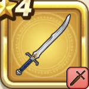

パパスのつるぎ
攻略班 5.0点 / ブレードガード渾身斬り超ぶんまわし
くわしい特徴
【レベル別習得スキル】 Lv1ブレードガード（消費MP：7）自身のガード率を1段階上げる Lv8渾身斬り（消費MP：7）頭上から切りつけ敵1体に威力180%の斬撃ダメージを与える Lv16超ぶんまわし（消費MP：15）振り回した渾身の剣で敵全体に威力170%の斬撃ダメージを与える Lv20エレメント系へのダメージ+10% Lv24けもの系へのダメージ+10% Lv28ゲマへのダメージ+10% Lv32すばやさ+5 Lv36守備力+5 Lv40攻撃力+5 【限界突破スキル】 1凸スキルの斬撃・体技ダメージ+3% 2凸スキルの斬撃・体技ダメージ+3% 3凸スキルの斬撃・体技ダメージ+3% 4凸スキルの斬撃・体技ダメージ+3%